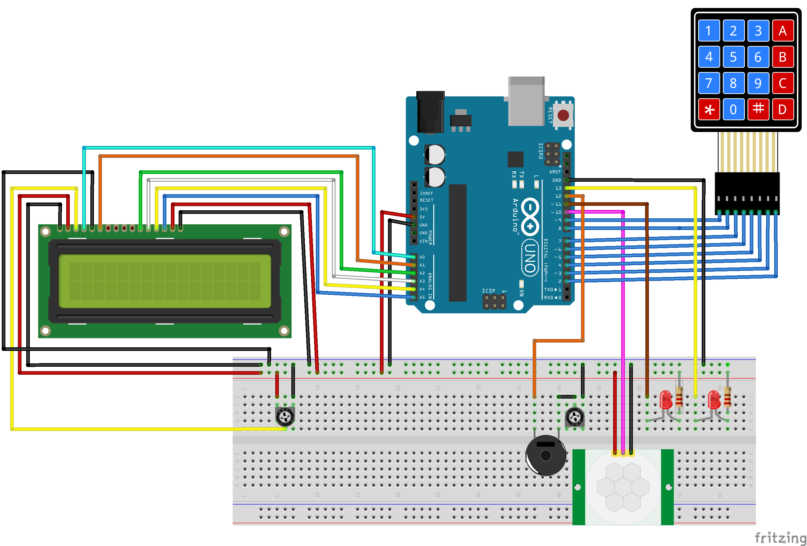

Student at Chas Academy & WCS Software Developer at Elsystem.
My coding journey started in 2023, when I was studying sales and marketing, oddly enough. One year in to the course I realized that sales was not quite for me. What I wanted to do was problem solving, hence I got interested in programming.
I then decided between JS or C as a starting language, and decided that C would fit me better. So I dropped out of sales and started my journey at Chas academy C/C++. It was scary, but a nessecary leap of faith that I am so glad I took, since I have fallen in love with programming.
At first it was quite hard, however I pushed through and I am so happy I did, since I managed to land a job at Elsystem. The job at Elsystem is honestly amazing and I have learned so much not only about programming, but also about the industry in general. And I really look forward to learning a lot more.
In my free time I like to go for walks with my two dogs Dibley and Oggi, work on coding projects and go to the gym. Since I spend more time behind a computer now because of school and my job, I have found the gym to be a really nice place to be, it really helps me feel better and I believe it makes me a better programmer.
This is a project where me and a few classmates made a memory game using an Arduino Uno. In this project I learned a lot about structure within C/C++ and classes and objects. It was also quite fun to learn about hardware as well, check it out here.
In this project me and a classmate made a home alarm, in which we used an Arduino Uno and an ESP32. This product works as a break-in detector and uses sensors to detect movement and sound. Check it out here!
